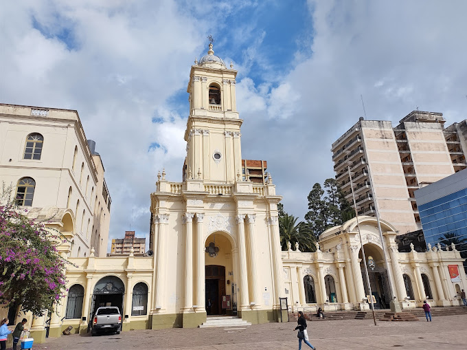

Catedral Basílica de San Salvador
La Catedral Basílica del Santísimo Salvador o simplemente Catedral de San Salvador de Jujuy es la sede del obispado católico de la ciudad de San Salvador de Jujuy en Argentina, y también un edificio histórico del país. La obra fue declarada Monumento Histórico Nacional por Decreto No. 1347 del 16 de mayo de 1931.